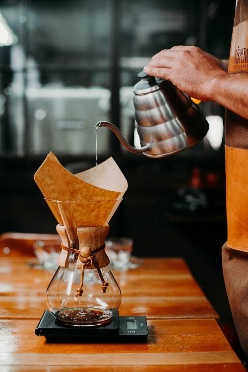

Japanese Cold Brew Coffee

Description
Simply put, it's coffee brewed hot onto ice.
Ingredients
Makes roughly 500ml:
- 225g ice
- 30g medium-coarse ground coffee
- 225g near-boiling water
Steps
- Set a carafe with ice on scales.
- Set up V60 with paper filter and add ground coffee.
- Bloom coffee for 30s.
- Pour rest of the water all over grounds.
- Allow water to fully drain through filter. Then, discard grounds.